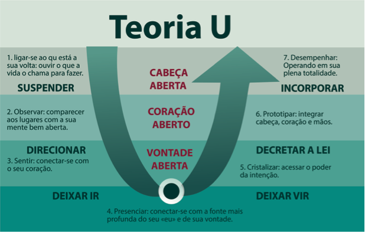

Planejar a partir do futuro que emerge
08 de Maio de 2017 às 07:00
Acabo de ler um livro chamado “Liderar a partir do futuro que emerge – a evolução do sistema econômico ego-cêntrico para o eco-cêntrico”, escrito pelo professor e conferencista sênior do MIT, Dr. C. Otto Scharmer, autor da Teoria U.
O livro pretende ser, como diz o próprio Otto, “um sopro de vida num sistema agonizante”, e pretende analisar e buscar soluções para a seguinte pergunta: “Por que estamos criando coletivamente resultados que ninguém quer?”
Segundo Otto, existe um ponto cego nas discussões globais de hoje, sugerindo que devemos “reagir às atuais ondas de mudanças desestabilizadoras a partir de um lugar mais profundo, que nos conecta ao futuro que emerge em vez de apenas reagir aos padrões do passado, o que em geral só leva à perpetuação desses padrões”
E quais os sintomas aparentes dessa desconexão coletiva que vivemos? Segundo o livro, são 3 sintomas:
O livro pretende ser, como diz o próprio Otto, “um sopro de vida num sistema agonizante”, e pretende analisar e buscar soluções para a seguinte pergunta: “Por que estamos criando coletivamente resultados que ninguém quer?”
Segundo Otto, existe um ponto cego nas discussões globais de hoje, sugerindo que devemos “reagir às atuais ondas de mudanças desestabilizadoras a partir de um lugar mais profundo, que nos conecta ao futuro que emerge em vez de apenas reagir aos padrões do passado, o que em geral só leva à perpetuação desses padrões”
E quais os sintomas aparentes dessa desconexão coletiva que vivemos? Segundo o livro, são 3 sintomas:
- Divisor ecológico – revelado pela forma como estamos exaurindo os recursos naturais de maneira irresponsável – nos dias de hoje, consumimos 50% a mais do planeta do que é possível regenerar;
- Divisor Social – revelado pela crescente diferença de acúmulo de recursos entre os mais ricos e os mais pobres – relatório da desigualdade mundial da Oxfam de 2016 aponta que 1% dos mais ricos detém mais riqueza do que todo o resto do mundo junto;
- Divisor espiritual – é a desconexão do “eu” atual com o “Eu” potencial (melhor versão de mim mesmo) – essa desconexão se revela pelo aumento da depressão e suicídios. Segundo a OMS (Organização Mundial de Saúde), no ano 2000 mais que o dobro de pessoas morreram vítimas de suicídio do que em guerras.
Pesquisas iniciadas nos anos 90 no MIT, lideradas pelo professor Peter Senge e acompanhadas pelo professor Otto Scharmer, revelaram que os métodos e ferramentas para criar mudanças organizacionais eram bastante eficazes quando aplicadas por alguns líderes, mas não resultavam nenhuma diferença em outros casos. As pesquisas questionavam “Como as mesmas ferramentas poderiam ser eficazes nas mãos de alguns e ineficazes nas mãos de outros líderes organizacionais?”
O processo de pesquisa levou 18 anos de trabalho e teve como resultado um modelo para aprender, liderar, inovar e promover uma profunda renovação sistêmica nas organizações. Otto e Peter chamaram esse modelo de Teoria U, pelo fato de seu caminho de implantação se assemelhar à letra U, como pode ser visto na figura abaixo:

fonte: www.fappes.edu.br
fonte: www.fappes.edu.br
Em geral, nossa forma de aprender e planejar é baseada num olhar para o passado para indicar os planos para o futuro. Acontece que passamos por um momento complexo de nossa história, onde o que vivemos no passado já não nos dá pistas sobre como será o futuro. Precisamos aprender a “visualizar e sentir o futuro que emerge”, não olhando para o passado, mas sendo capaz de “deixar ir (abrir mão) o passado para se conectar com as possibilidades do futuro que emerge e aprender com elas.”
Com este texto, não pretendemos explicar detalhadamente a Teoria U, mas apenas gerar o interesse e curiosidade sobre novas formas de pensar e planejar o futuro das organizações.
Para se aprofundar sobre a Teoria U, você pode começar pelo curso introdutório, gratuito, nesse link. Pode também explorar outras possibilidades de formação no site do Presencing Institute ou comprar o livro “Teoria U”, ou o livro “Liderar a partir do futuro que emerge”, ambos disponíveis em português.
Abaixo, sugerimos um exercício, que poderá ser feito em grupos, como parte de processos de revisão estratégica de qualquer organização.
EXERCÍCIO
Respondam as perguntas abaixo individualmente e, em seguida, discutam em duplas ou apresentem num grupo maior:
Com este texto, não pretendemos explicar detalhadamente a Teoria U, mas apenas gerar o interesse e curiosidade sobre novas formas de pensar e planejar o futuro das organizações.
Para se aprofundar sobre a Teoria U, você pode começar pelo curso introdutório, gratuito, nesse link. Pode também explorar outras possibilidades de formação no site do Presencing Institute ou comprar o livro “Teoria U”, ou o livro “Liderar a partir do futuro que emerge”, ambos disponíveis em português.
Abaixo, sugerimos um exercício, que poderá ser feito em grupos, como parte de processos de revisão estratégica de qualquer organização.
EXERCÍCIO
Respondam as perguntas abaixo individualmente e, em seguida, discutam em duplas ou apresentem num grupo maior:
- Em que áreas você vivencia um mundo que está terminando/morrendo e em que áreas você vivencia um mundo que está começando/querendo nascer?
- Quais você considera as causas fundamentais e as principais questões da crise atual da humanidade e dos três divisores (ambiental, social e espiritual)?
- O que você acha que vai acontecer nos próximos 10 ou 20 anos?
- Quais ações você gostaria de promover neste exato momento para fazer uma diferença no futuro?
Rodrigo Alvarez é Sócio Proprietário da Mobiliza. Administrador de Empresas, com Especialização em Fundraising pela Indiana Fundraising School, formação em Processos de Desenvolvimento pelo PROFIDES/Instituto Fonte e em Pedagogia Social pela Associação Brasileira de Pedagogia Social de Base Antroposófica. Atua há 20 anos com gestão e captação de recursos. Foi um dos fundadores da ABCR – Associação Brasileira de Captadores de Recursos e é membro do Conselho Consultivo do Rogare – Centro de estudos internacional que pesquisa, entre outras coisas, sobre o futuro da captação de recursos no mundo.
Publicado por

Notícias mais populares
Gestão
Em agosto de 2017, a revista ÉPOCA e o Instituto Doar divulgaram a primeira ediç&...
Contexto e tendências
Criado para tornar mais transparentes as parcerias entre a administração públic...
Profissional captador
A captação de recursos é fundamental para a sustentabilidade de uma organiza&cc...